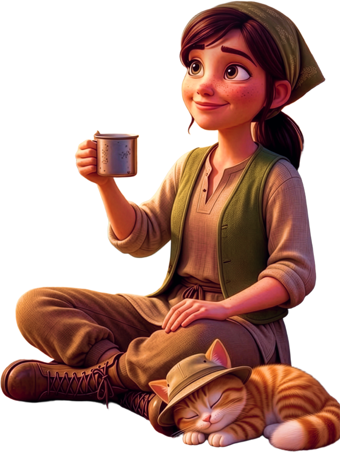

Explorers, grab your warmest scarf 🧭
On Christmas Day my expedition diary goes public. From 10 AM ET, every two hours, I'll leave you one page: a bearing, a cipher or a pattern of stars. Six pages in all. Read one, drop your pin on the map, and if you're right, you get a stamp in your Expedition Passport.
Someone small, ginger and very smug is also hiding finds around the dunes. He won't tell me where. He might tell you in the Watchers chat.
On December 26 your six pins point to one place: the North Star Oasis. Find it between noon and 5 PM ET and your name goes into the oasis chest.
📍 Grab your passport now on the map page. 3 and 6 stamps unlock FP, GC and SC codes. See you under the star!
No purchase necessary. 21+. US only. Full rules on the map page.
